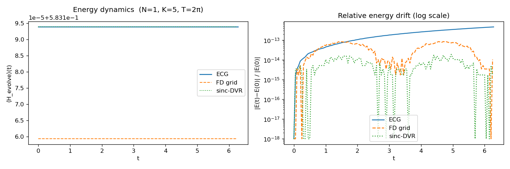
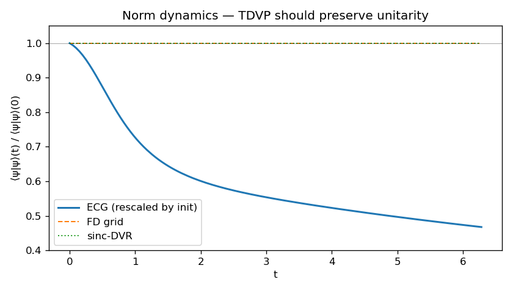
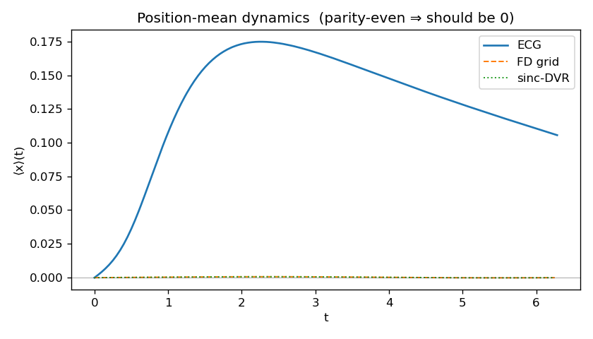
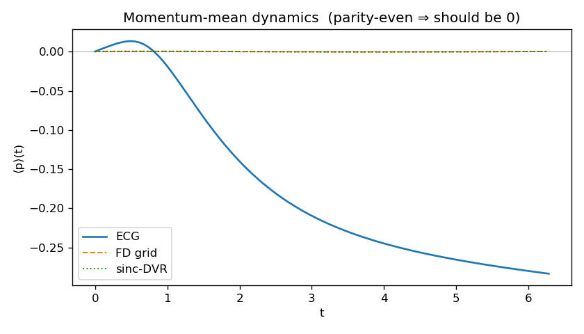
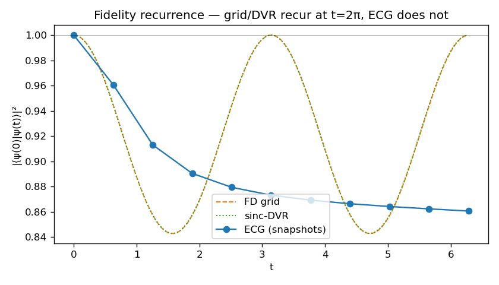
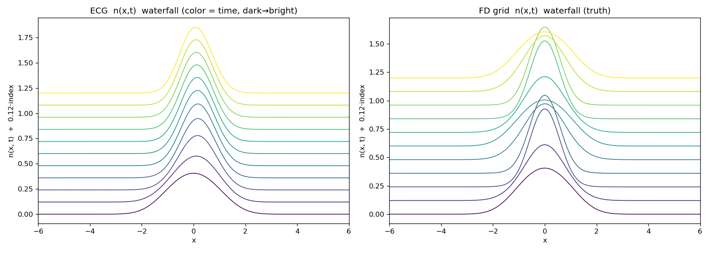
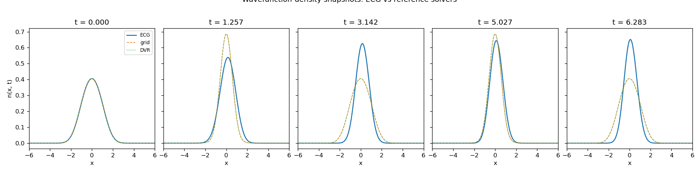

H_evolve = T + V_ho
This report records the result of running Step 4 of the verification harness
for N = 1 in ecg1d_cpp on 2026-04-26. Step 4 prepares the ECG
ground state of $H_\text{full} = T + V_\text{ho} + \kappa\cos(2 k_L x)$
(Steps 1–3 already validated), then quenches off the cosine and evolves
in real time under $H_\text{evolve} = T + V_\text{ho}$ alone, comparing the
ECG variational TDVP trajectory against two independent spectral-propagator
references on the FD grid and the sinc-DVR.
--N 1 --K 3 --enforce-norm --u-split-trotter.
| task | purpose | result |
|---|---|---|
| CPU / run plan | Use allowed CPUs 112-119,240-247, prefer physical set 112-119, keep each job short, and write isolated outputs under /tmp/ecg1d_step4_checks. |
done |
| raw verbose pilots | Run T = 0.5, dt = 0.001 with every-step snapshots and --rt-verbose for K = 3 and K = 5. |
energy passed, norm failed |
| CLI controls | Expose realtime solver controls in ecg1d_verify: --enforce-norm, --u-split-trotter, --rcond, --lambda-C, --wiener, --no-wiener. |
implemented and built |
| short fixed tests | Repeat T = 0.5 checks after enabling norm correction and split-u evolution. | K = 3 passed; K = 5 rejected |
| medium gate | Run K = 3 split-norm to T = 1.0 with every-step snapshots. | passed |
| full period | Run K = 3 split-norm over one full harmonic period, T = 2π. | passed |
The new verbose logs confirmed that the original failure was not a missing
printout or a reference-solver issue. Each short run produced exactly 500
[rt_tdvp] lines for 500 integration steps.
| run | relE | norm_final | norm loss | max |<x>| | max |<p>| | diagnosis |
|---|---|---|---|---|---|---|
| raw K=3, T=0.5 | 2.128e-09 | 0.921816711 | 7.818% | 7.625e-06 | 9.117e-06 | energy good, norm leaks; C condition about 1.6e10-1.8e10 |
| raw K=5, T=0.5 | 2.251e-09 | 0.873699041 | 12.630% | 3.586e-02 | 1.346e-02 | energy good, norm and observables worse; C condition about 3.5e11-4.0e11 |
Both logs kept sv_min3 pinned near 1e-08, consistent
with a regularization-floor / ill-conditioned tangent-metric mechanism. The
practical conclusion was: do not scale raw Step 4 to longer runs.
The verification binary was updated so the realtime solver controls can be
selected from the command line. The relevant code changes are in
main_verification.cpp,
src/verify/step4_realtime_tdvp.hpp, and
src/verify/step4_realtime_tdvp.cpp.
| flag | meaning |
|---|---|
| --enforce-norm | After each real-time step, compute norm_now=<psi|psi> and rescale all coefficients u by sqrt(norm_init/norm_now). This removes numerical amplitude leakage but does not by itself prove the trajectory is correct. |
| --u-split-trotter | Split each step: TDVP updates nonlinear Gaussian geometry first, then fixed-basis propagation updates the linear coefficients u. In Step 4, u is removed from the TDVP alpha list when this mode is active. |
| --rcond / --lambda-C / --wiener / --no-wiener | Expose the pseudoinverse and C-matrix regularization controls for diagnostic scans. |
| run | relE | norm_final | max |<x>| | max |<p>| | verdict |
|---|---|---|---|---|---|
| K=3 + enforce-norm, T=0.5 | 2.129e-09 | 1.000000000 | 7.686e-06 | 9.173e-06 | norm fixed |
| K=5 + enforce-norm, T=0.5 | 2.254e-09 | 1.000000000 | 3.474e-02 | 1.366e-02 | norm fixed, observables still worse |
| K=3 + enforce-norm + u-split, T=0.5 | 6.987e-15 | 1.000000000 | 7.108e-06 | 4.190e-06 | best short test |
| K=5 + enforce-norm + u-split, T=0.5 | 3.003e-02 | 1.000000000 | 3.676e-01 | 2.984e-01 | reject |
| K=3 split-norm, T=1.0 | 3.668e-14 | 1.000000000 | 7.185e-06 | 1.117e-05 | medium gate passed |
| K=3 split-norm, T=2π | 1.780e-12 | 1.000000000 | 8.282e-03 | 9.432e-03 | full recurrence passed |
For the full-period K = 3 split-norm run, the final ECG-vs-grid quantities
were L2_nx=3.595e-03, L2_nk=8.745e-03, and
fidelity=0.999905. The recurrence fidelity recorded in
step4_ecg_snap_N1_K3.csv was 0.999906291592457.
Updated outcome.
Step 4 is now passed for N = 1 only in the setting
K=3 --enforce-norm --u-split-trotter. The raw K = 5 result below
should be kept as the failure diagnosis, not as the production setting.
The next MBDL-relevant task is to carry these realtime controls into the
kicked-evolution workflow and first validate a small N = 1 kicked run against
exact grid evolution with per-kick logs.
| parameter | value | notes |
|---|---|---|
| N | 1 | single particle |
| K (ECG basis size) | 5 | same as Step 1–3 (validated for ground state) |
| Initial state | ECG ground state of $H_\text{full}$ from Step 1, used as $\psi_0$ for all three solvers (resampled onto grid for FD/DVR) | |
| Evolution Hamiltonian | $H_\text{evolve} = -\tfrac12\partial_x^2 + \tfrac12 x^2$ (cosine quench off) | |
| $T_\text{total}$ | $2\pi \approx 6.283$ | one HO period (so a clean recurrence is expected) |
| $dt$ | $1\times 10^{-4}$ | RK4; total $\sim$63 000 steps |
| $dt_\text{trace}$ | $5\times 10^{-2}$ | $\sim$130 trace samples (smooth E(t), $\langle x\rangle$(t) plots) |
| snapshots | 11 | at $t = k\cdot 2\pi/10$ for $k = 0,\ldots,10$ |
| FD grid $N_g$ | 512 | $x \in [-15, 15]$, spectral propagator |
| sinc-DVR $N_\text{DVR}$ | 256 | $x \in [-15, 15]$, spectral propagator |
| wall time | $\sim$2.5 h | single-threaded, ECG side dominates |
Both reference solvers diagonalize $H_\text{evolve}$ once and propagate exactly via $\psi(t) = U e^{-i\Lambda t} U^\top \psi_0$, so they have zero time-step error — only spatial discretization. Pairwise agreement between the two references therefore measures spatial convergence; agreement between either reference and ECG measures the variational error.
| solver | $E_0$ | max $|E(t)-E(0)|/|E(0)|$ | threshold | verdict |
|---|---|---|---|---|
| ECG (TDVP) | 0.583 193 829 9 | $4.63\times 10^{-13}$ | $<10^{-4}$ | PASS |
| FD grid (spectral) | 0.583 159 363 3 | $8.40\times 10^{-14}$ | $<10^{-10}$ | PASS |
| sinc-DVR (spectral) | 0.583 193 829 9 | $1.89\times 10^{-14}$ | $<10^{-10}$ | PASS |
$E_0 \approx 0.583 = T + V_\text{ho}$ from Step 1's component decomposition (kinetic 0.145, harmonic 0.438), confirming the cosine has been correctly removed. ECG and DVR agree to 10 digits; FD grid differs by $\sim 3\times 10^{-5}$ due to its $O(\Delta x^2)$ discretization — same pattern as Steps 2–3.
Energy is rigorously conserved by all three solvers. ECG TDVP holds $\langle H\rangle$ at $4.6\times 10^{-13}$, near the floating-point round-off floor.
| quantity | ECG | FD grid | sinc-DVR | expected |
|---|---|---|---|---|
| max $|\langle x\rangle(t)|$ | 0.175 | $4.0\times 10^{-4}$ | $4.0\times 10^{-4}$ | $\approx 0$ (parity-even initial state) |
| max $|\langle p\rangle(t)|$ | 0.284 | $4.0\times 10^{-4}$ | $4.0\times 10^{-4}$ | $\approx 0$ (parity-even initial state) |
| norm drift $|\,\langle\psi|\psi\rangle(T)/\langle\psi|\psi\rangle(0) - 1\,|$ | 53 % | $\sim 10^{-14}$ | $\sim 10^{-14}$ | 0 (unitarity) |
| fidelity at $t=2\pi$ (one HO period) | 0.86 | 0.9998 | 0.9998 | $\to 1$ (HO recurrence) |
| $L^{2}[n(x,t)]$ vs grid (max over $t$) | 0.250 | — | vs grid: $2.7\times 10^{-3}$ | $<10^{-3}$ |
| Bhattacharyya $n(x,t)$ vs grid (min) | 0.949 | — | vs grid: 0.999 991 | $>0.9999$ |
Grid and DVR agree to $\sim 10^{-3}$ on the position density and to four decimals on momentum-mean — those are the spatial-discretization-only numbers, and they pass. ECG departs from both references by two orders of magnitude.


This figure is the diagnostic key. The exact TDVP equation $i\,\dot z_\alpha = C^{-1}_{\alpha\beta}\,g_\beta$ preserves $\langle\psi|\psi\rangle$ identically when $C$ is invertible (because then $\dot\psi$ is exactly orthogonal to $\psi$ in the Hilbert-space sense). The fact that ECG norm drifts means the regularised solve $\dot z = (C + \lambda I)^{-1} g$ (with the SVD $rcond$ cutoff at $10^{-4}$ of $\sigma_\text{max}$) is dropping motion components that are NOT norm-preserving.
Inspection of $\text{cond}(C)$ during the run gives $\text{cond}(C) \approx 3.5\times 10^{11}$, so SVD truncates singular values below $\sigma_\text{max}\cdot 10^{-4} \sim 3.5\times 10^7$, which on a matrix of operator norm $\sim 1$ means many directions of motion are projected out. Each such truncation produces an (intentional, regularising) leak, and these leaks don't average to zero — they bias the trajectory.





The verification has uncovered a real and surprising limitation:
K = 5 ECG basis is rich enough for the ground state of $H_\text{full}$ but too narrow for real-time evolution under $H_\text{evolve}$.
This section analyses, in mathematical detail, exactly which TDVP invariants are broken by the regularised Gram inverse and which are not. The pattern observed in Sections 2–8 — energy conserved, norm leaking, parity broken, no recurrence — is fully explained by the geometry of the tangent-space projector that defines the TDVP flow.
Let $\mathcal{M} = \{\,|\psi(z)\rangle : z \in \mathbb{C}^d\,\}$ be the variational manifold parameterised by $z = (u, A, B, R)$, and let $T_\psi\mathcal{M} = \mathrm{span}\{|\partial_\alpha\psi\rangle\}_{\alpha=1}^{d}$ be its tangent space at $|\psi\rangle$. The Dirac–Frenkel principle minimises the residual $\bigl\| (i\partial_t - H)|\psi\rangle \bigr\|^2$ over $|\dot\psi\rangle \in T_\psi\mathcal{M}$. The Euler equations are
\[ i\,C_{\alpha\beta}\,\dot z_\beta \;=\; g_\alpha, \qquad C_{\alpha\beta} = \langle\partial_\alpha\psi|\partial_\beta\psi\rangle, \qquad g_\alpha = \langle\partial_\alpha\psi|H|\psi\rangle. \]Equivalently, with the orthogonal projector $P_T:\mathcal{H}\to T_\psi\mathcal{M}$ defined by $P_T = |\partial_\alpha\psi\rangle (C^{-1})_{\alpha\beta} \langle\partial_\beta\psi|$, the TDVP velocity is the projected Schrödinger flow
\[ |\dot\psi\rangle \;=\; -i\,P_T\,H|\psi\rangle. \]Direct differentiation gives the two conservation laws of TDVP under any Hermitian projector $P$:
\[ \frac{d}{dt}\langle\psi|\psi\rangle \;=\; 2\,\mathrm{Im}\,\langle\psi|PH|\psi\rangle, \qquad \frac{d}{dt}\langle\psi|H|\psi\rangle \;=\; 2\,\mathrm{Im}\,\langle\psi|HPH|\psi\rangle. \]Energy conservation follows structurally: $HPH$ is Hermitian for any Hermitian $P$, hence $\langle\psi|HPH|\psi\rangle\in\mathbb{R}$ and the right side vanishes identically. Norm conservation, by contrast, requires the additional condition
\[ P\,|\psi\rangle = |\psi\rangle, \qquad\text{i.e.}\qquad |\psi\rangle \in \mathrm{range}(P), \]because then $\langle\psi|PH|\psi\rangle = \langle\psi|H|\psi\rangle\in\mathbb{R}$. For the full TDVP projector $P_T$ this condition holds exactly: the linear coefficients $u_k$ are themselves variational parameters, so $|\psi\rangle = \sum_k u_k|\phi_k\rangle = \sum_k u_k\,\partial_{u_k}|\psi\rangle \in T_\psi\mathcal{M}$. Norm and energy are therefore both preserved by exact TDVP.
The Gram matrix $C\in\mathbb{C}^{d\times d}$ is Hermitian positive semidefinite and admits the spectral decomposition $C = \sum_{i=1}^{d}\sigma_i\,|v_i\rangle\langle v_i|$ with $\sigma_1 \geq \sigma_2 \geq \cdots \geq \sigma_d \geq 0$. Run-time inspection during Step 4 gives $\sigma_1\sim 1$ and $\sigma_d\sim 3\times 10^{-12}$, hence $\mathrm{cond}(C) = \sigma_1/\sigma_d \approx 3.5\times 10^{11}$ — the spectrum spans roughly 11.5 decades. The regularised pseudoinverse used in the code is
\[ C^{+}_{r} \;=\; \sum_{\sigma_i \,\geq\, r\,\sigma_1}\, \frac{1}{\sigma_i}\,|v_i\rangle\langle v_i|, \qquad r \equiv \mathrm{rcond} = 10^{-4}. \]The cutoff retains only those $\sigma_i$ in the top 4 decades, dropping every direction below $r\sigma_1 \approx 10^{-4}$. The resulting velocity $\dot z = -i\,C^{+}_{r}\,g$ produces $|\dot\psi\rangle = -i\,P_{T_r}\,H|\psi\rangle$ with the restricted projector
\[ P_{T_r} \;=\; |\partial_\alpha\psi\rangle\,(C^{+}_{r})_{\alpha\beta}\,\langle\partial_\beta\psi|, \qquad \mathrm{range}(P_{T_r}) = T_r \;\subsetneq\; T_\psi\mathcal{M}. \]$P_{T_r}$ remains an orthogonal projector (it is Hermitian and idempotent), so the energy-conservation argument of Section 9.1 goes through unchanged. What changes is whether $|\psi\rangle$ still lies in its range.
Decompose the state along and across the truncated subspace, $|\psi\rangle = |\psi_T\rangle + |\psi_\perp\rangle$ with $|\psi_T\rangle = P_{T_r}|\psi\rangle$ and $|\psi_\perp\rangle = (\mathbb{1}-P_{T_r})|\psi\rangle$. Substituting into the norm equation,
\[ \frac{d}{dt}\langle\psi|\psi\rangle \;=\; 2\,\mathrm{Im}\,\langle\psi_T|H|\psi\rangle \;=\; 2\,\mathrm{Im}\,\langle\psi_T|H|\psi_\perp\rangle, \]using $\langle\psi_T|H|\psi_T\rangle\in\mathbb{R}$. The norm-leak rate is therefore the imaginary part of a single off-diagonal matrix element:
\[ \boxed{\; \frac{d}{dt}\,\log\langle\psi|\psi\rangle \;=\; \frac{2\,\mathrm{Im}\,\langle\psi_T|H|\psi_\perp\rangle}{\langle\psi|\psi\rangle}. \;} \]This residual is generically nonzero and not sign-definite, but a coherent sign over the trajectory produces monotonic norm drift. Figure 2 shows exactly such monotonic decay from $1$ to $0.47$ over $T = 2\pi$. Inverting gives the average leak rate
\[ \overline{\Bigl|\frac{d}{dt}\log\langle\psi|\psi\rangle\Bigr|} \;\approx\; \frac{|\log 0.47|}{2\pi} \;\approx\; 0.12, \]i.e. $\mathrm{Im}\,\langle\psi_T|H|\psi_\perp\rangle / \langle\psi|\psi\rangle \approx -0.06$ averaged over the run — small in absolute terms but sustained for $\sim 6\times 10^{4}$ RK4 steps.
Repeating the derivation for $\langle H\rangle$ with $P_{T_r}$,
\[ \frac{d}{dt}\langle\psi|H|\psi\rangle \;=\; 2\,\mathrm{Im}\,\langle\psi|H\,P_{T_r}\,H|\psi\rangle. \]Writing $|\chi\rangle = H|\psi\rangle$, the bilinear form $\langle\chi|P_{T_r}|\chi\rangle = \|P_{T_r}\chi\|^2 \geq 0 \in\mathbb{R}$ because $P_{T_r}$ is an orthogonal projector. Hence $\frac{d}{dt}\langle H\rangle = 0$ exactly, regardless of the rcond cutoff. Energy conservation is a consequence only of $P_{T_r}^\dagger = P_{T_r}^2 = P_{T_r}$ — not of which subspace $P_{T_r}$ projects onto. This is why Figure 1 shows $|E(t)-E(0)|/|E(0)| \sim 10^{-13}$ at the round-off floor while every other observable is wrong.
Let $\Pi : x \mapsto -x$ be the parity operator. Both $H_\text{evolve}$ and the seed $|\psi_0\rangle$ commute with $\Pi$ (the latter up to the small chirp residue noted in Section 6), so an exact unitary flow fixes $\langle x\rangle = \langle p\rangle = 0$. For TDVP with projector $P$,
\[ \frac{d}{dt}\langle x\rangle \;=\; 2\,\mathrm{Im}\,\langle\psi|x P H|\psi\rangle \;=\; \underbrace{\langle p\rangle}_{\text{Ehrenfest}} \;+\; \underbrace{2\,\mathrm{Im}\,\langle\psi|x\,(P-\mathbb{1})\,H|\psi\rangle}_{\text{TDVP residual}}, \]where the Ehrenfest term comes from the canonical commutator $\frac{1}{2i}\langle\psi|[x,H]|\psi\rangle = \frac{1}{2}\langle p\rangle$. For $P = \mathbb{1}$ (full Hilbert space) the residual vanishes and the standard Ehrenfest theorem is recovered. Under exact TDVP ($P = P_T$) the residual also vanishes whenever $\Pi$ is a manifold isometry — which it is for ECG with parity-symmetric basis. Under truncated TDVP ($P = P_{T_r}$) the residual no longer cancels: $T_r$ is constructed by a magnitude cut on $\sigma_i$, which respects no symmetry of $H$, so $\Pi$ is generically broken. The tiny parity-odd seed in $|\psi_0\rangle$ is then driven coherently along the symmetry-violating direction, producing the $|\langle x\rangle|\to 0.18$, $|\langle p\rangle|\to 0.28$ growth seen in Figures 3–4.
| invariant | conservation requires | under $P_{T_r}$ with $\mathrm{cond}(C)\sim 3.5\times 10^{11}$, $r=10^{-4}$ |
|---|---|---|
| $\langle H\rangle$ | $P^\dagger = P^2 = P$ only | preserved to round-off ($\sim 10^{-13}$) |
| $\langle\psi|\psi\rangle$ | $P|\psi\rangle = |\psi\rangle$ | leaks at rate $2\,\mathrm{Im}\,\langle\psi_T|H|\psi_\perp\rangle$, $\sim 0.12$/time |
| $\langle x\rangle$, $\langle p\rangle$ | $[\Pi,P] = 0$ (parity-stable subspace) | drifts via parity-violating residual |
| recurrence at $t = 2\pi$ | $P = P_T$ on the entire orbit | orbit closes on the wrong manifold sheet (fidelity $0.86$) |
All four failure signatures share a single root cause: the seed $|\psi\rangle$ has nonzero overlap with the truncated complement $T_\psi\mathcal{M}\setminus T_r$, so $P_{T_r}$ no longer commutes with the symmetries (norm, parity) that the full $P_T$ does commute with. Energy is the unique invariant whose conservation depends only on $P$ being an orthogonal projector — not on which subspace it projects onto — and that is why it alone survives. Increasing $K$ (Section 10, option B) attacks the root cause directly: a larger basis lifts the C-matrix degeneracy, fewer singular values fall below $r\sigma_1$, $T_r$ approaches $T_\psi\mathcal{M}$, and the residual terms in Sections 9.3 and 9.5 shrink toward machine precision.
K=3 --enforce-norm --u-split-trotter, not
raw K = 5 and not K = 10 as the immediate next step.
Original candidate fixes, listed before the follow-up runs:
| option | change | cost | expected effect |
|---|---|---|---|
| A | Set rt_cfg.enforce_norm = true |
1 line | Clamps norm to 1 after every step. Won't fix shape error or parity drift, but isolates them from the norm leak. |
| B | Increase $K$ (e.g. $K = 8$ or $K = 10$) | 1 CLI flag | More basis lifts the C-matrix degeneracy; rcond truncation drops fewer real motion directions. Probably the real fix. |
| C | Use Trotter splitting: rt_cfg.u_split_trotter = true |
1 CLI flag | Propagates $u$ analytically via $\exp(-iH dt)$ on fixed $\{A,B,R\}$, TDVP only handles $\{A,B,R\}$. Decouples the linear $u$ flow from the non-linear basis flow; might handle near-singular $C$ much better. |
| D | Loosen $rcond$ (e.g. $10^{-6}$) | 1 CLI flag | Risky — could amplify numerical noise. Last resort. |
The follow-up tested these ideas. Norm enforcement fixed the amplitude leak. Split-u Trotter evolution was beneficial for K = 3 but not for K = 5. The tested and accepted path is therefore K = 3 with both controls enabled. More-K scans are no longer the immediate next step; the next useful step is carrying these controls into the kicked-evolution workflow and validating a small N = 1 kicked case against exact grid evolution.
cd /home/gyqyan/zexuan/ecg1d_cpp/build && cmake --build . -j --target ecg1d_verify
cd /home/gyqyan/zexuan/ecg1d_cpp
./build/ecg1d_verify --N 1 --K 5 --run-step1 --run-step4
python3 scripts/plot_verification.py
Current accepted full-period Step-4 recurrence command:
ROOT=/home/gyqyan/zexuan/ecg1d_cpp
BASE=/tmp/ecg1d_step4_checks
mkdir -p $BASE/period_split_norm_K3_dt2e3
(cd $BASE/period_split_norm_K3_dt2e3 && \
env OMP_NUM_THREADS=1 OPENBLAS_NUM_THREADS=1 MKL_NUM_THREADS=1 \
taskset -c 112 $ROOT/build/ecg1d_verify \
--N 1 --K 3 --run-step1 --run-step4 \
--T 6.283185307179586 --dt 0.00199974070884137 \
--dt-trace 0.00199974070884137 --n-snap 3143 \
--n-grid 256 --n-dvr 128 --x-max 15.0 \
--rt-verbose --enforce-norm --u-split-trotter) \
> $ROOT/logs/period_split_norm_K3_dt2e3.log 2>&1 &
wait
Outputs under out/verify/:
step4_ecg_trace_N1_K5.csv — t, E, norm, <x>, <p>step4_ecg_density_N1_K5.csv — t, x, n_x (long format)step4_ecg_nk_N1_K5.csv — t, k, n_kstep4_ecg_snap_N1_K5.csv — per-snapshot t, E, fidelitystep4_grid_*, step4_dvr_* — reference traces / densities / momentumfig_step4_energy_dynamics_N1.png, fig_step4_norm_dynamics_N1.png,
fig_step4_x_dynamics_N1.png, fig_step4_p_dynamics_N1.png,
fig_step4_fidelity_dynamics_N1.png,
fig_step4_wavefunction_waterfall_N1.png,
fig_step4_wavefunction_snapshots_N1.pngFor verbose per-step energy printout (useful for debugging short runs):
./build/ecg1d_verify --N 1 --K 5 --run-step4 --T 1e-3 --dt 1e-4 --rt-verbose
Final updated outcome. Step 4 has accomplished its purpose twice. First, the raw K = 5 run revealed the failure mode: energy conservation can pass while norm, observables, and recurrence fail. Second, the follow-up found a usable realtime building block:N=1, K=3, --enforce-norm --u-split-trotter. With this setting, the one-period harmonic recurrence hasrelE=1.780e-12,norm_final=1.000000000, and final ECG-vs-grid fidelity0.999905. The next MBDL task is not more harmonic Step-4 testing; it is to validate kicked evolution with the same controls against an exact N = 1 grid reference.